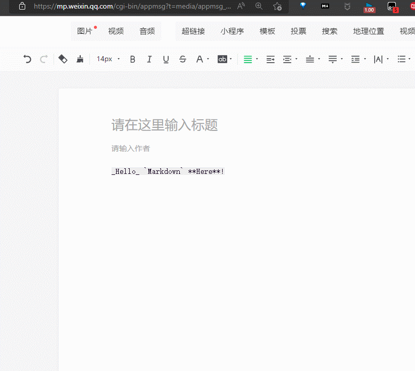

永远热爱markdown

一 简介
1 什么是markdown
Markdown是一种轻量级标记语言，创始人为约翰-格鲁伯（John Gruber）。它允许人们使用易读易写的纯文本格式编写文档，然后转换成有效的XHTML（或者HTML）文档。这种语言吸收了很多在电子邮件中已有的纯文本标记的特性。 由于Markdown的轻量化、易读易写特性，并且对于图片，图表、数学式都有支持，许多网站都广泛使用Markdown来撰写帮助文档或是用于论坛上发表消息。如GitHub，Reddit，Diaspora，Stack Exchange，OpenStreetMap，SourceForge、简书等，甚至还能被使用来撰写电子书。
——-来自百度百科
2 为什么我们需要markdown
- 在我们需要进行记笔记时, 我们对于格式( 例如, 字号, 段间距)并没有太大的要求, 反而对结构有要求, 例如标题是什么, 这个标题下有几个小标题, 对于我们的要求来讲, word 显得过于臃肿,
- markdown 是 latex 和 word 的一个 trade-off
- 因为他的轻量化, 导致他的格式固定, 使用不同的平台不会出现 word 那样不兼容的问题
- 因为是近几年才出现的( 04年 ), 能够更贴近这个时代, 例如md文件本身不保存图片, 这就可以使用网络上的图床, 让专业的人干专业的事
3 markdown 工具( 软件 )
Typora( 强推 )Typora 官方中文站、MacDown
4 markdown 插件
markdown here [Markdown Here](https://markdown-here.com/)
markdownload [markdownload](https://microsoftedge.microsoft.com/addons/detail/hajanaajapkhaabfcofdjgjnlgkdkknm)
二 markdown 语法
1 标题 ‘#’ 号—-生成文章的结构
- 后面需要一个空格
- 一个是一级标题, 两个是二级标题, 依次类推, 越少代表优先级越高,
- 被用来生成文章的结构, 我经常用###代表目录, ####代表子目录
### 第一章
#### 第一章第一节
#### 第一章第二节
2 无序列表
使用- (注意后面有空格)
3 网址
[显示内容](网址)
例如上文的
[Typora 官方中文站](https://typoraio.cn/)
4 图片


5 代码
使用```(数字1前面的那个)
6 引用
> (小于号)
三 markdown 与浏览器交互
3.1 markdown here——将markdown上传为 html 格式
使用方法 : 点击插件图标或者是, alt + ctrl + M (动画在下面)

设置格式 : 右键浏览器插件图标 -> 扩展选项-> 基本渲染CSS


还可以使用 latex公式使用$$包裹起来


3.2 将网页下载为markdown
- 下载地址：markdownload_微软商店下载
使用方法: 点击图标 -> Download

{kind=link}

4 图床
有了图床的 markdown 才是完整的markdown
1 介绍
图床（Image Hosting Service）是一种用于存储和分享图片的在线服务。它允许用户上传图片文件，并生成一个可访问的 URL 地址，用户可以通过该地址在网页上或其他平台上分享图片。图床通常提供免费和付费两种服务，用户可以根据需要选择合适的方案使用。
图床的主要功能包括：
- 图片存储：用户可以将图片文件上传到图床服务器上进行存储，这些图片文件可以是网页中的配图、产品图片、个人照片等。
- 图片分享：图床为用户生成的图片 URL 地址可以方便地在网页、论坛、社交媒体等平台上分享图片内容，用户只需复制图片链接即可。
- 图片管理：图床通常提供图片管理功能，允许用户对上传的图片进行管理，包括查看、编辑、删除等操作。
- 图片处理：一些高级图床服务还提供图片处理功能，如裁剪、旋转、压缩等，使用户可以在图床上直接对图片进行编辑处理。
使用图床的好处包括：
- 节省空间：通过将图片上传到图床服务器，可以减轻自己网站或应用的服务器负担，节省存储空间。
- 加快加载速度：使用图床存储图片可以加速网站或应用的加载速度，因为图床通常会使用 CDN（内容分发网络）技术，将图片文件分发到全球各地的服务器节点，使用户可以从距离更近的服务器获取图片，从而加快加载速度。
- 方便分享：图床生成的图片 URL 地址可以方便地在各种平台上分享图片内容，无需担心图片被删除或地址失效的问题。
总的来说，图床是一个方便的在线服务，可以帮助用户轻松存储、管理和分享图片。
2 picgo
PicGo 是一个开源的图片上传工具，可以帮助用户快速上传图片到图床并生成图片链接。它提供了简洁友好的图形界面，支持多种图床服务，并且具有丰富的配置选项和插件扩展功能。可以帮助用户快速、便捷地上传和管理图片，并生成图片链接用于分享或嵌入网页。
PicGo 的主要特点和功能有：
- 支持多种图床服务：PicGo 支持丰富的图床服务，包括但不限于 GitHub、七牛云、阿里云、腾讯云、Imgur 等。用户可以根据自己的需求选择合适的图床服务进行配置和使用。
- 多种上传方式：PicGo 提供了多种上传方式，包括拖拽上传、剪贴板上传、截图上传等。用户可以根据自己的习惯和需求选择合适的上传方式。
- 支持快捷键操作：PicGo 支持自定义快捷键，用户可以通过快捷键实现快速上传图片、截图等操作，提高工作效率。
- 自定义命名规则：PicGo 支持用户自定义图片文件名的命名规则，包括时间格式、文件名格式等，使用户可以根据自己的需求对上传的图片进行命名。
- 图片处理功能：PicGo 提供了一些简单的图片处理功能，如图片压缩、图片裁剪等，用户可以在上传图片之前对图片进行简单的处理。
- 丰富的插件扩展：PicGo 支持插件扩展，用户可以根据自己的需求安装各种插件，扩展 PicGo 的功能和特性，例如支持更多图床服务、添加更多上传方式等。
- 跨平台支持：PicGo 支持 Windows、macOS 和 Linux 等多个平台，用户可以在不同的操作系统上使用相同的工具和配置。
- 开源免费：PicGo 是开源项目，用户可以自由获取、使用和修改源代码，完全免费。
| [配置手册 | PicGo](https://picgo.github.io/PicGo-Doc/zh/guide/config.html) |
3 B站图床picgo 插件
插件在线安装
- 打开 PicGo 详细窗口，选择 插件设置，搜索 bili 安装，然后重启应用即可。
使用方法
- 找
cookie中的SESSDATA还有bli_jct复制即可

实现原理
- 将图片存在一个 B 站的公共静态资源空间。
- 举例：所有人上传的图片都会放在这个空间里面，但是你不发布动态的话，那么这个资源与你就没有绑定关系，那么你自然是找不到的。你发布了的话，你的这条动态就会跟这个图片资源绑定关系，那么查看的时候，就知道这个动态绑定了哪些图片链接，就可以看到对应的图片了。